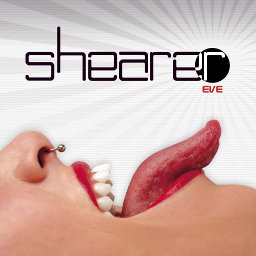

Free Songs
Do you like the songs? Remember to support the artists who give their work for free!
How to add songs to the game?
You can find information on supported formats and song folder locations at the Wiki page.
Karaoke songs (UltraStar format)
The songs here are only repackaged by the Performous project. The packages contain license files listing the authors of the materials used and in many cases also of the Ultrastar conversion.
The libre package contains songs with very permissive licenses.
- Free Software Song by Thor
- On the run by Joshua Morin
The restricted package contains songs that use more restrictive licenses not permitting modifications and/or commercial use.
- I 18 by Dead Smiling Pirates
- Northern Star by Steven Dunston
- Space Invaders by Pornophonique
Jonathan Coulton collection, licensed CC by-nc-sa.
- A Talk with George
- Better
- Big Bad World One
- Chiron Beta Prime (with video)
- Code Monkey (with video)
- Creepy Doll (with video)
- Dance, Soterios Johnson, Dance
- First of May
- Flickr (with video)
- Furry Old Lobster
- I Crush Everything
- I Feel Fantastic
- I'm Your Moon
- Ikea
- Monkey Shines
- Mr. Fancy Pants
- My Beige Bear
- Not About You
- Re: Your Brains
- Shop Vac
- Skullcrusher Mountain
- That Spells DNA
- The Future Soon
- When You Go

Shearer collection, licensed CC by-nc-sa.
- 69 (with karaoke)
- Can't stop it (with karaoke)
- In My Hand
- Man Song (with karaoke)
- Stay with me (with karaoke)
More songs?
We haven't had time to get any band (FoFiX-format) or dancing (StepMania) songs on this page yet. If you have suggestions on what to include, especially if it also contains drums and vocals, please let us know! (it needs to be freely usable).
Some ideas for finding songs elsewhere can be found at the wiki.